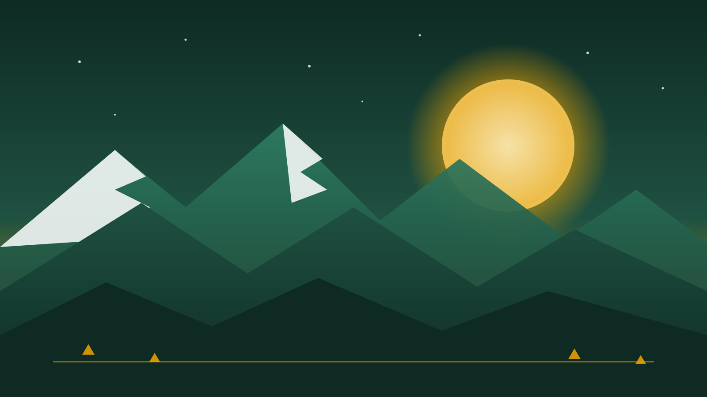

🎒 Grupe
🎒 Grupe
⛺ din 20147–24 aniBucurești
Cabana Scout — jurnal de aventură
Sâmbăta în București, vacanțele în natură. Citește poveștile, alege o grupă sau ajută.
Povestea noastră
Cele mai noi articole, ca un pachet de cărți — derulează și se desfac.